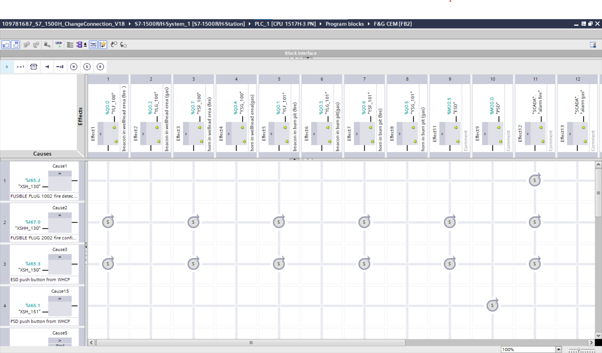
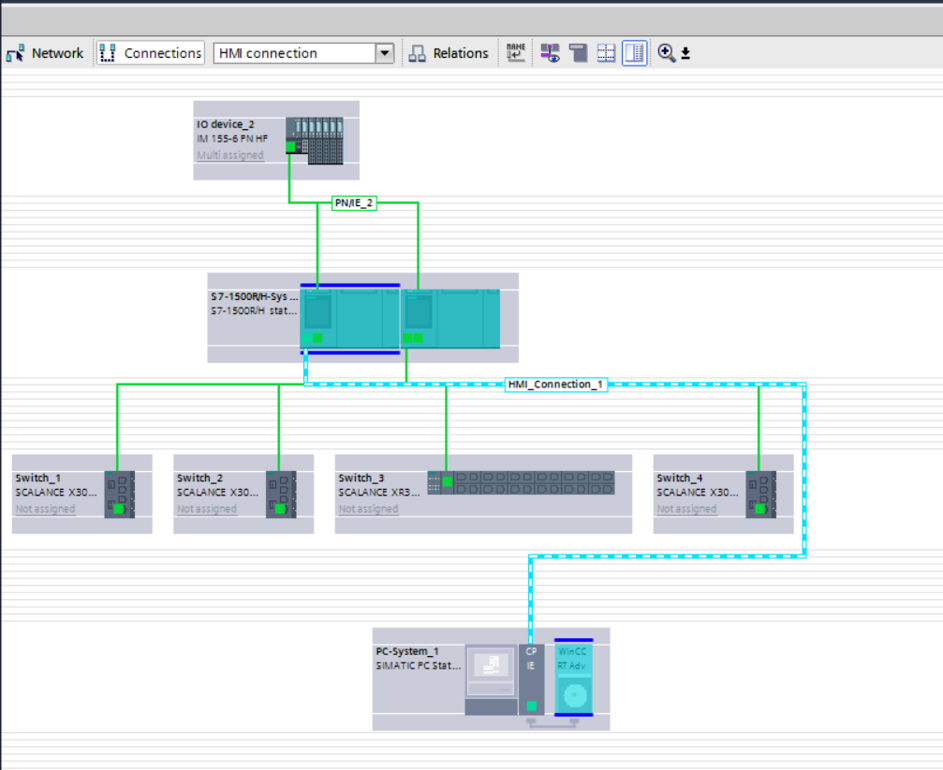
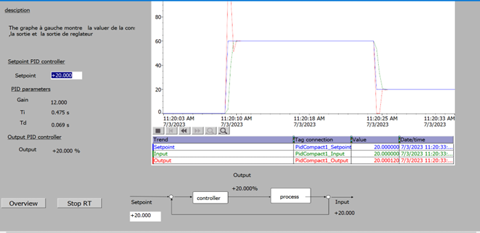
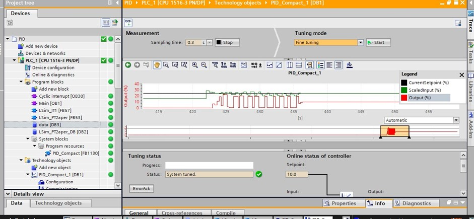
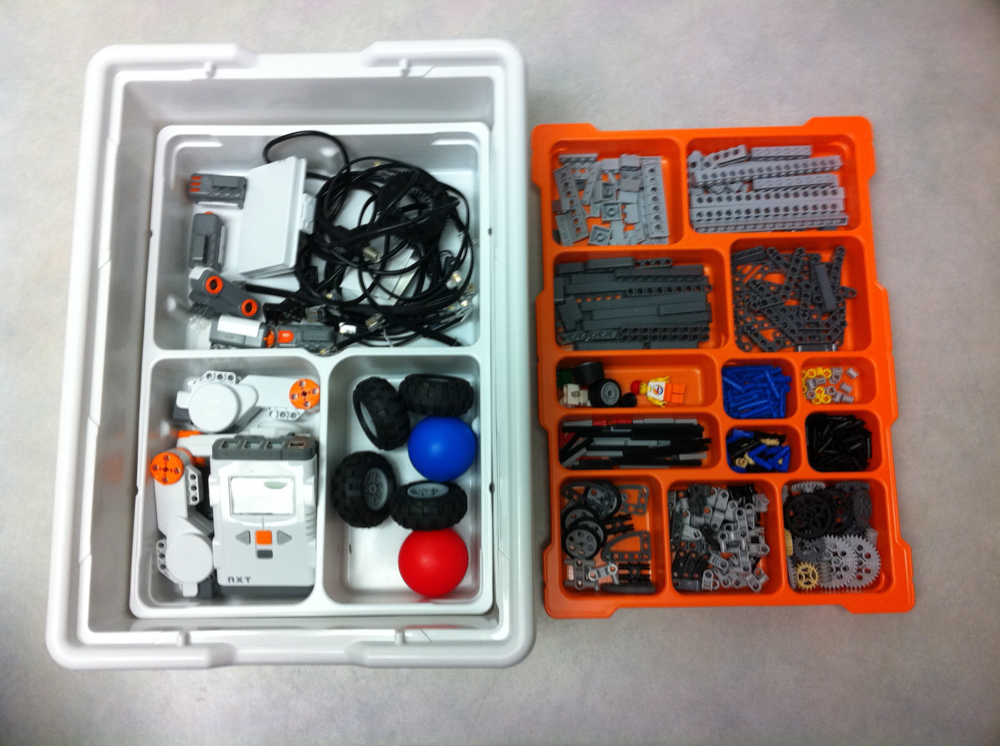

KNX/ETS


Dans le cadre d’un projet en automatisation des bâtiments, j’ai conçu et développé un système de Gestion Technique du Bâtiment (GTB) basé sur la technologie KNX, appliqué à un bâtiment tertiaire (bureaux), avec pour objectif l’optimisation énergétique, le confort des occupants et la supervision centralisée.
Le projet a débuté par une analyse fonctionnelle des besoins, incluant l’identification des lots techniques (éclairage, HVAC, volets roulants) et la définition des scénarios d’exploitation. Cette phase a conduit à l’élaboration de listes de points, d’architectures système et de stratégies de contrôle adaptées au bâtiment.
La mise en œuvre a été réalisée via le logiciel ETS, utilisé pour la configuration du réseau KNX. J’ai assuré l’intégration des capteurs et actionneurs KNX (détecteurs de présence, sondes de température, capteurs de luminosité, actionneurs d’éclairage et de stores), ainsi que l’adressage et la structuration des groupes de communication.
J’ai développé des logiques d’automatisation avancées, incluant la gestion de l’éclairage intelligent (présence et luminosité), la régulation des systèmes HVAC en fonction des consignes et de l’occupation, ainsi que le pilotage des protections solaires pour optimiser les apports thermiques.
Une attention particulière a été portée à l’optimisation énergétique, à travers la mise en place de scénarios intelligents (modes éco/confort, plannings horaires, gestion automatique en absence) permettant de réduire les consommations tout en maintenant le confort utilisateur.
Le système a été complété par une interface de supervision, permettant une visualisation en temps réel des états, la gestion des commandes, ainsi que le suivi des performances énergétiques du bâtiment.
Ce projet a permis de mettre en place une solution fiable, évolutive et interopérable, répondant aux exigences des bâtiments modernes en matière d’efficacité énergétique et d’automatisation intelligente.
Il m’a permis de développer des compétences solides en GTB/GTC, en intégration KNX, en conception d’architectures de contrôle et en optimisation des systèmes énergétiques.
piercan
Dans le cadre d’un projet en automatisme industriel, j’ai conçu et développé un système de maintenance prédictive appliqué à une ligne de production agroalimentaire, où la continuité de service et la fiabilité des équipements sont critiques.
L’objectif principal était de remplacer une maintenance préventive classique par une approche basée sur la surveillance continue et l’analyse des données, afin de réduire les arrêts non planifiés et optimiser la disponibilité des machines de production.
J’ai commencé par l’étude des équipements critiques (moteurs, pompes, convoyeurs) et l’identification des grandeurs physiques pertinentes. J’ai ensuite défini une architecture d’acquisition en intégrant des capteurs industriels (température, vibration, courant), connectés à un système d’acquisition de données centralisé.
La phase de traitement a été réalisée en Python, avec le développement d’outils d’analyse et l’implémentation d’algorithmes de machine learning pour la détection d’anomalies. J’ai utilisé des méthodes de classification et d’analyse de tendances afin d’identifier les dérives de fonctionnement et anticiper les défaillances.
J’ai également mis en place des indicateurs de performance et des seuils intelligents permettant de générer des alertes en temps réel, facilitant la prise de décision pour les équipes de maintenance.
Une attention particulière a été portée au prétraitement des données (filtrage, normalisation) et à l’optimisation des modèles afin de garantir des résultats fiables et exploitables en environnement industriel.
Ce système permet une anticipation des pannes, une réduction des coûts de maintenance et une amélioration significative de la disponibilité des équipements.
Ce projet m’a permis de développer des compétences en automatisme, acquisition de données, data analyse et en intégration de solutions de maintenance prédictive dans un contexte industriel réel.
piercan
Dans le cadre d’un projet réalisé pour une entreprise spécialisée dans la production de gants pour boîtes à gants et pièces techniques destinées à des secteurs exigeants (nucléaire, pharmaceutique), j’ai développé une solution basée sur l’intelligence artificielle pour automatiser le contrôle qualité du processus de production.
Face aux limites du contrôle manuel (temps élevé, variabilité, risque d’erreurs), l’objectif était de mettre en place un système capable de détecter automatiquement les défauts produits, depuis le stockage de la matière première jusqu’à l’emballage.
J’ai commencé par la création d’une base de données d’images, en réalisant des acquisitions avec une caméra industrielle (focale fixe) sous différentes contraintes (éclairage, angles de prise de vue, variations de couleur). J’ai utilisé le logiciel Vimba pour piloter la caméra et garantir la qualité des acquisitions. Les images ont ensuite été annotées et étiquetées afin de constituer un dataset exploitable pour l’apprentissage.
La phase de développement a été réalisée en Python, avec l’expérimentation de plusieurs modèles d’apprentissage automatique et de deep learning. J’ai notamment implémenté des réseaux de neurones convolutifs (CNN) pour la classification des défauts, permettant de distinguer les pièces conformes (OK/NOK) puis d’identifier différents types de défauts tels que : bulle ouverte, bulle fermée, inclusion, tache, décoloration.
J’ai assuré l’entraînement, la validation et l’optimisation des modèles (ajustement des hyperparamètres, amélioration de la précision), ce qui a permis d’obtenir des résultats fiables et robustes en conditions proches du réel.
Après validation du modèle, j’ai contribué à l’intégration industrielle du système, avec l’installation de caméras sur la ligne de production. J’ai notamment proposé un positionnement stratégique avant le démoulage, lorsque le gant est encore sur son moule, afin de garantir une détection optimale des défauts.
Cette solution permet un contrôle qualité automatisé en temps réel, une réduction des erreurs humaines, une amélioration de la traçabilité et une augmentation de la productivité.
Ce projet m’a permis de développer des compétences en vision industrielle, intelligence artificielle, traitement d’images et en intégration de solutions innovantes dans un environnement industriel exigeant.
GTB
Dans le cadre de mon stage chez HEMERA ENERGY, j’ai participé à la réalisation de plusieurs projets de Gestion Technique du Bâtiment (GTB/GTC) sur différents sites (Éhpad, entrepôt logistique et grande surface type Leclerc), avec pour objectif la supervision centralisée, l’optimisation énergétique et l’amélioration du confort et de la sécurité des installations techniques.
J’ai commencé par une analyse fonctionnelle des besoins clients, basée sur les installations existantes et les contraintes spécifiques de chaque site. Cette phase a donné lieu à la production de documents techniques d’analyse, incluant des descriptions de fonctionnement, des listes de points, ainsi que des propositions d’architecture et de scénarios techniques. À partir de cette étude, j’ai proposé des solutions adaptées, validées avec les clients avant mise en œuvre.
La phase de réalisation a été effectuée sur le système Loxone, où j’ai développé les logiques d’automatisation et les scénarios de fonctionnement des bâtiments. J’ai intégré la gestion de plusieurs lots techniques, notamment l’éclairage intelligent (présence, luminosité, scénarios horaires), le pilotage des systèmes HVAC (chauffage, ventilation, climatisation) avec régulation de température, la gestion des volets roulants et protections solaires, ainsi que le traitement des alarmes techniques et états de défauts équipements.
J’ai également travaillé sur l’intégration des capteurs et actionneurs industriels (température, présence, luminosité, contacteurs, actionneurs HVAC) et sur les logiques de contrôle telles que les plannings horaires, la détection d’occupation, et la régulation basée sur les consignes utilisateurs et conditions environnementales. L’intégration des communications terrain a été réalisée selon les équipements disponibles, notamment via le protocole Modbus.
En parallèle, j’ai conçu les interfaces de supervision, permettant une visualisation claire des installations : états des équipements, scénarios actifs, alarmes techniques et suivi global des systèmes.
Enfin, j’ai participé à la mise en service sur site, incluant les tests fonctionnels, la validation des scénarios et les ajustements finaux, ainsi qu’à la formation des clients afin de garantir une bonne prise en main du système GTB et une autonomie dans son utilisation.
Ce projet m’a permis de développer des compétences concrètes en GTB/GTC, en automatisation des bâtiments, en intégration multi-sites et en relation client, avec une forte dimension terrain et industrielle.
Automatisation d’une station de pompage sous PLC Siemens S7-300
J’ai réalisé la programmation et la mise en œuvre d’un système d’automatisation d’une station de pompage dans le cadre d’un stage au sein de l’entreprise ENGTP à Alger. L’objectif du projet était d’assurer le contrôle automatique du fonctionnement de la station, en garantissant la gestion des cycles de pompage, la sécurité des équipements et la continuité de service. Le travail a commencé par une analyse du fonctionnement global de la station, afin de comprendre les conditions de démarrage et d’arrêt des pompes, la logique de régulation du niveau ainsi que les sécurités liées au système (niveau bas, niveau haut, protection pompe, défauts électriques). J’ai ensuite développé la logique de commande en langage Ladder (LAD) sur l’automate Siemens S7-300, en structurant le programme autour des états de fonctionnement, des conditions d’activation des pompes et de la gestion des alarmes et défauts. Une attention particulière a été portée à la sécurité de fonctionnement et à l’enchaînement correct des séquences de pompage. J’ai également réalisé la configuration des entrées/sorties de l’automate, l’intégration des capteurs de niveau et des actionneurs, ainsi que la mise en place des conditions d’interverrouillage pour éviter tout fonctionnement incohérent du système. Des phases de test et de validation ont permis de vérifier la stabilité du système, la réactivité des commandes et le bon fonctionnement des cycles automatiques en conditions réelles de simulation. Ce projet m’a permis de renforcer mes compétences en automatisme industriel, programmation d’automates Siemens S7-300 en Ladder, analyse fonctionnelle de systèmes industriels et mise en œuvre de solutions de contrôle fiables et sécurisées.
Système SCADA pour regroupement des puits de gaz Hassi Berkine


Dans le cadre de mon projet de fin d’études, j’ai réalisé la conception d’un système SCADA pour le regroupement de puits de gaz sur le site de Hassi Berkine, dans un environnement pétrolier critique fortement contraint en termes de sécurité et de disponibilité. J’ai débuté par une analyse fonctionnelle basée sur les schémas P&ID afin d’identifier les besoins industriels, les scénarios de fonctionnement et les contraintes du site. J’ai ensuite mené une étude d’instrumentation en distinguant les systèmes ESD et DCS pour garantir la sécurité des procédés. J’ai contribué au choix de l’architecture automatisée, en sélectionnant l’automate redondant Siemens S7-1500H afin d’assurer une haute disponibilité et la continuité de production. La programmation a été réalisée sous Siemens TIA Portal avec le développement de logiques en FBD, la mise en place d’interverrouillages(interlocks), et la gestion des alarmes et défauts. J’ai également défini les réseaux de communication industriels (PROFIBUS / PROFINET) en fonction des équipements terrain. Dans le cadre du système F&G (Fire & Gas), j’ai élaboré une matrice cause/effet (CEM) permettant une réaction automatique face aux situations critiques (gaz, incendie, défauts). Enfin, j’ai conçu la supervision SCADA avec des interfaces graphiques par zone, intégrant la visualisation temps réel, la gestion des alarmes (OK/NOK, acquittement) et le suivi des équipements. Ce projet a abouti à une solution fiable, sécurisée et adaptée aux environnements critiques, permettant une surveillance en temps réel et une réduction des risques opérationnels. Il m’a permis de développer des compétences solides en automatisme, instrumentation, supervision industrielle et en gestion de systèmes critiques.
Intégration et optimisation d’un régulateur PID sur un API s7 1500 avec TIA portal pour le contrôle de débit


Dans la continuité du projet SCADA, j’ai proposé et réalisé l’intégration et l’optimisation d’un régulateur PID pour le contrôle du débit d’injection d’inhibiteur de corrosion, un paramètre critique pour la protection des puits de gaz.
En analysant le fonctionnement existant, j’ai identifié que le débit était maintenu constant, sans régulation, ce qui pouvait entraîner une dégradation des équipements et une inefficacité du traitement. J’ai donc initié une étude visant à mettre en place une régulation automatique en boucle fermée afin d’adapter le débit en fonction des conditions process.
L’implémentation a été réalisée sur l’automate Siemens S7-1500 via TIA Portal, en utilisant le bloc PID Compact, dédié aux applications de régulation industrielle. J’ai assuré :
- ✔️ Configuration du régulateur PID (entrée process, consigne, sortie de commande)
- ✔️ Intégration dans le programme automate en FBD
- ✔️ Mise en place des modes de fonctionnement (manuel / automatique)
- ✔️ Paramétrage des gains (Kp, Ki, Kd) et tuning
- ✔️ Gestion des limitations, anti-windup et sécurités
Le système permet désormais un contrôle dynamique et précis du débit, assurant une protection optimale des puits, une réduction des risques de surdosage ou sous-dosage, et une amélioration de l’efficacité du procédé.
Ce projet m’a permis de renforcer mes compétences en régulation industrielle, en automatisme avancé, et en optimisation de boucles de contrôle PID dans un environnement réel et critique.
Conception et programmation d’un robot mobile intelligent (EV3)


Dans le cadre d’une unité universitaire en robotique, j’ai participé à plusieurs défis techniques basés sur la conception et la programmation d’un robot autonome utilisant la plateforme EV3dev et le kit LEGO MINDSTORMS. Chaque défi faisait l’objet d’une compétition visant à évaluer les performances des robots développés par les étudiants.
Le projet a été réalisé en Python avec l’intégration de différents capteurs (capteur de position, capteurs de distance) et actionneurs (moteurs gauche/droite), permettant de développer des comportements robotiques autonomes en environnement contraint.
Le premier défi portait sur l’approche réactive, où j’ai conçu un robot capable de naviguer en environnement inconnu, de suivre un mur grâce à une stratégie de contrôle simple, puis d’étendre ce comportement pour la résolution de labyrinthe basique en temps réel.
Le deuxième défi consistait en la modélisation et régulation du robot, avec l’objectif de formaliser son comportement dynamique et de concevoir un correcteur PID permettant de réguler précisément sa trajectoire et sa position, améliorant ainsi la stabilité et la précision du mouvement.
Le troisième défi, intitulé suivi de ligne optimisé (Line Following Challenge), visait à optimiser le déplacement du robot sur une piste noire sur fond blanc. J’ai développé une stratégie de contrôle avancée permettant d’améliorer la vitesse d’exécution tout en maintenant la stabilité de trajectoire, dans un objectif de performance en compétition.
Le quatrième défi portait sur la cartographie et navigation en labyrinthe. J’ai implémenté un algorithme permettant au robot de parcourir un labyrinthe de manière autonome, d’éviter les collisions avec les murs et de gérer les virages complexes, tout en affichant en temps réel le trajet parcouru sur l’écran embarqué.
Ce projet m’a permis de développer des compétences en robotique mobile, programmation embarquée, contrôle PID, et en conception d’algorithmes de navigation autonome dans des environnements dynamiques et contraints.